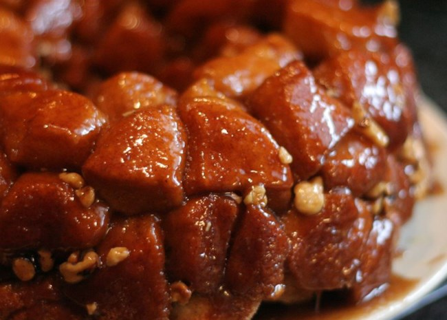

Monkey Bread

Description
Easy and delicious! One of the best monkey bread recipes out there. I will warn you, it is not for the faint of heart. The sweetness will knock your socks off.
My momma started making this when I was knee high to a grasshopper. Although I sometimes cheat and use Pilsbury Grands for the dough (shhh, don't tell her),
I always make her delicious from scratch dough when she's around.
Every bite brings back a flood of memories. Christmases in Kentucky. Thanksgivings in Tennessee. And finally my birthday,
where no cake could hold a candle to this tasty treat. Enjoy!
Ingredients
- 3 (12 ounce) packages refrigerated biscuit dough
- 1 cup white sugar
- 2 teaspoons ground cinnamon
- 1/2 cup margarine
- 1 cup packed brown sugar
- 1/2 cup chopped walnuts (optional)
- 1/2 cup raisins
Steps
- Preheat oven to 350 degrees F (175 degrees C). Grease on 9 or 10 inch tube/bundt pan.
- Mix white sugar and cinnamon in a plastic bag. Cut biscuits into quarters. Shake 6 to 8 biscuit pieces i
n the sugar cinnamon mix. Arrange pieces in the bottom of the prepared pan. Continue until all biscuits are coated and placed in pan.
If using nuts and raisins, arrange them in and among the biscuit pieces as you go along.
- In a small saucepan, melt the margarine with the brown sugar over medium heat. Boil for 1 minute. Pour over the biscuits.
- Bake at 350 degrees F (175 degrees C) for 35 minutes. Let bread cool in pan for 10 minutes, then turn out onto a plate.
Do not cut! The bread just pulls apart.